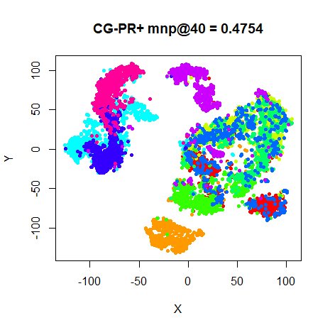
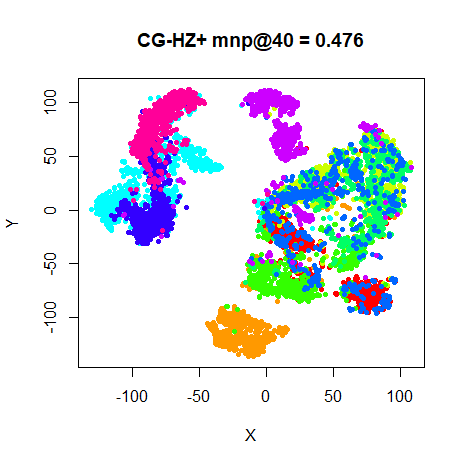
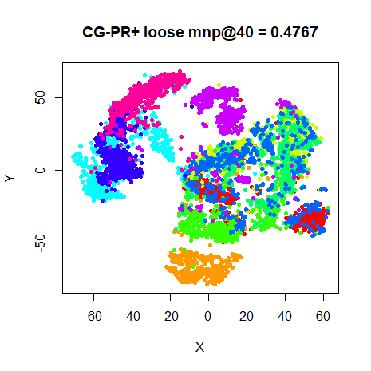
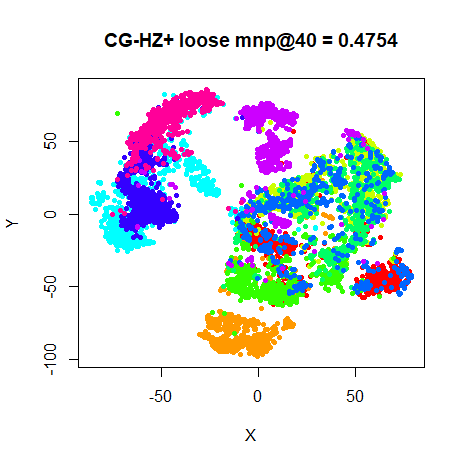

This article retains its original experiments and examples. For current package usage, see the usage guide.
Another in my series of investigating the optimization of t-SNE. See also results for L-BFGS and the approximate Hessian Spectral Direction. The spectral direction paper also evaluates a lot of the same methods.
A conjugate gradient method was used with NeRV, without further details being provided.
I didn’t hold out high hopes for this, because the general advice in the literature is that they are at best competitive with quasi-Newton methods under some circumstances with their main advantage being their simpler implementation and reduced storage requirements. The price paid being they require stricter line search. The spectral direction paper tested a Matlab implementation, which uses the Polak-Ribière update (without restarting) and it didn’t seem to do very well.
Datasets
As usual, see the Datasets page.
Settings
In the following experiments, we’ll test two types of CG update: the Polak-Ribière update with restarting in the event of conjugacy being lost (often called “PRP” or “PR+”), and the update created by Hager and Zhang for the CG_DESCENT package. This also has a restart rule, so I’ll call it “HZ+”.
For the line search, I followed the recommendation from Nocedal and
Wright (chapter 3) to use a Strong Wolfe line search with a curvature
condition constant of 0.1. However, in the paper describing
CG_DESCENT, Hager and Zhang use a value (in their notation, \sigma) of 0.9, a looser
tolerance that Nocedal and Wright suggest is more appropriate for
quasi-Newton methods. So we’ll try both.
# CG with a strong Wolfe line search and PR+ update
iris_cgprp <- smallvis(
iris,
scale = FALSE,
perplexity = 40,
Y_init = "spca",
opt = list("cg", cg_update = "PR+", c2 = 0.1, step_tol = 1e-6, max_gr = 1000),
ret_extra = c("DX", "DY")
)
# CG with a strong Wolfe line search and HZ+ update
iris_cghzp <- smallvis(
iris,
scale = FALSE,
perplexity = 40,
Y_init = "spca",
opt = list("cg", cg_update = "HZ+", c2 = 0.1, step_tol = 1e-6, max_gr = 1000),
ret_extra = c("DX", "DY")
)
# CG with a strong (but loose) Wolfe line search and PR+ update
iris_cgprp <- smallvis(
iris,
scale = FALSE,
perplexity = 40,
Y_init = "spca",
opt = list("cg", cg_update = "PR+", c2 = 0.9, step_tol = 1e-6, max_gr = 1000),
ret_extra = c("DX", "DY")
)
# CG with a strong (but loose) Wolfe line search and HZ+ update
iris_cghzp <- smallvis(
iris,
scale = FALSE,
perplexity = 40,
Y_init = "spca",
opt = list("cg", cg_update = "HZ+", c2 = 0.9, step_tol = 1e-6, max_gr = 1000),
ret_extra = c("DX", "DY")
)Evaluation
For each initialization, the mean neighbor preservation of the 40
nearest neighbors, calculated using the quadra package. The
number reported is the mean average over all results and is labelled as
mnp@40 in the plots. 40 was chosen for these results to
match the perplexity.
Results
For each dataset, size results are shown below. On the first row, the
left image shows results using the PR+ update, and the right image from
the HZ+ update. In the middle row are the same CG settings except with
the line search having a looser tolerance as used in CG_DESCENT. On the
bottom row, the left and right hand images are those from using default
mize L-BFGS settings with Wolfe line search, and the
default smallvis DBD settings respectively. These used the
same initialization, input scaling and perplexity.


Fashion (6,000)
 |
 |
 |
 |
 |
 |
This is slightly surprising. On the smaller datasets, as usual, there’s little to choose between any of the methods. For MNIST, the CG results are less ugly than the L-BFGS result. Not much to choose between the PR+ and HZ+ results, either. Maybe the HZ+ results have the edge over PR+, but either seems fine. Neither is there that much of a difference between the “tight” Wolfe line search results and the loose results. However, MNIST results do show more of a cluster break up with the loose results. Also, the fashion MNIST results do seem to show more outlying points between the (admittedly overlapping) clusters.
Conjugate gradient seems to be no worse a choice for t-SNE than L-BFGS, although a tight line search is recommended. But still nothing beats the simplicity of the DBD defaults for t-SNE.